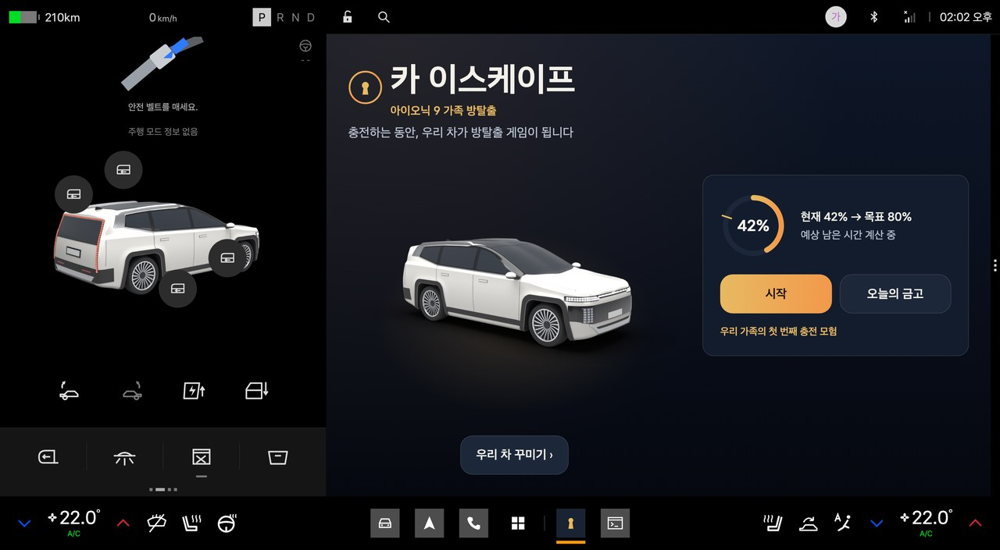

현대자동차그룹 차량용 앱 개발 공모전 · 제출 자료 모음
충전하는 동안, 우리 차가 방탈출 게임이 됩니다
카 이스케이프는 전기차 충전을 기다리는 15~30분 동안 가족이 차의 창문, 등, 열선, 와이퍼, 안전벨트를 직접 조작해 퍼즐을 푸는 Pleos Connect 앱입니다.

1문서
화면설계서
정보 구조, 화면 10종의 동작, 주행과 정차 상태 처리, 화면 규격 12종 대응, 토큰과 접근성. 16:9 지면 18장.
열기 →개발 상세 사양
모듈 구조, 상태 머신, 차량 연동 표, 퍼즐 판정 규칙과 안전 상한, 저장 데이터, 빌드와 테스트 현황.
열기 →근거와 구현 범위
지금 동작하는 것, 에뮬레이터에서 검증한 것, 웹 모사인 것, 앞으로 할 것. 주장마다 근거 위치.
열기 →출처·라이선스
글꼴, 라이브러리, 자체 제작물의 범위, 상표 고지.
열기 →2내려받기
3구현과 검증 범위 요약
90게임 로직 테스트 통과
564화면 스냅샷(상태 47 x 창 12종)
12공식 앱 창 크기 대응
4시즌 1 에피소드
| 구분 | 내용 |
|---|---|
| 지금 동작 | Android 앱(Kotlin, Compose)이 Pleos Vehicle SDK 2.3.2 로 차량 신호를 읽어 4개 화, 미션 12종, 주행 차단, 충전 시간 맞춤 추천과 엔딩, 기록과 꾸미기, 출발 금고까지 동작합니다. |
| 에뮬레이터 검증 | Pleos Connect Emulator v2.1.0(17형)에서 15분 편과 30분 편을 Virtual Console 조작만으로 완주했습니다. 기어 D 정지와 P 복귀, 무드등 쓰기, 출발 금고 전 과정을 확인했습니다. |
| 웹 모사 | 이 사이트의 시연은 같은 게임 규칙을 옮긴 웹 체험판입니다. 차량 신호와 차량 화면틀은 모사입니다. |
| 아직 | 실차에서는 실행하지 않았습니다. 안전벨트, 조수석과 2열 창문, 주행 모드 신호는 에뮬레이터에서 아직 확인하지 못했습니다. |
자세한 구분과 근거 위치는 근거와 구현 범위에 있습니다.
4공식 접수 안내
공식 접수는 주최 측이 안내한 이메일 접수로 하며, 기준 문서는 공식 접수양식(기획서)입니다. 이 페이지와 여기 있는 문서는 심사 참고용 추가 자료입니다. 접수 마감은 2026-11-15 23:59(한국 시간)입니다.
이 페이지에는 개인정보를 싣지 않습니다. 참가자 정보는 공식 접수양식의 참가신청서에만 적습니다.